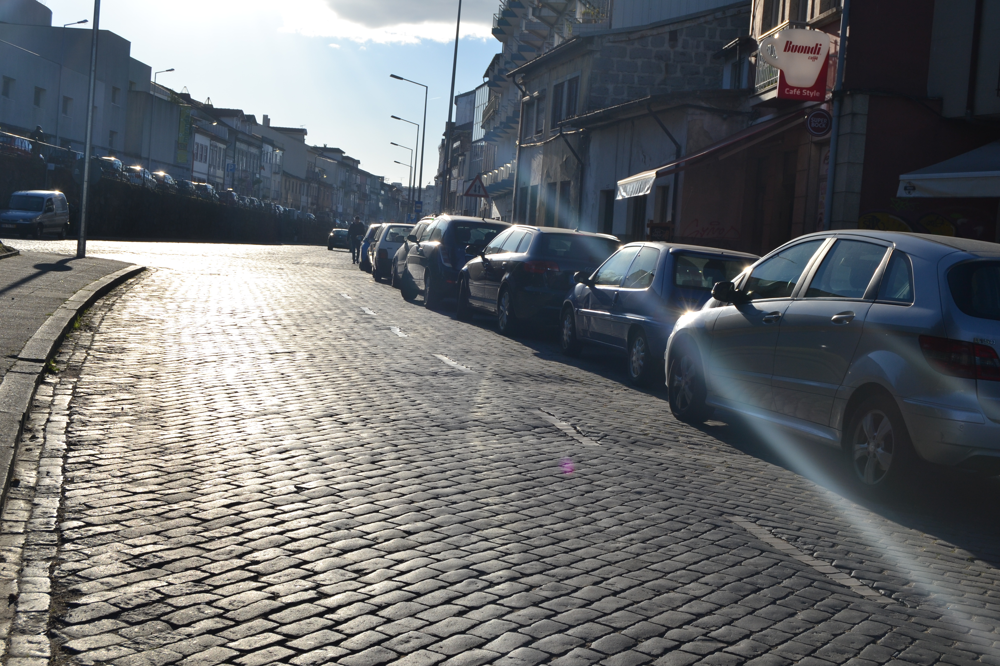
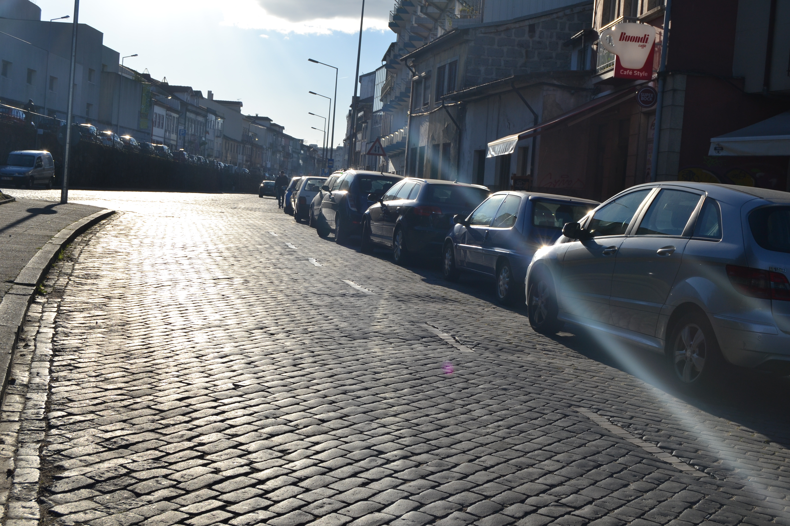

Rua de Infias
Descrição:
Extensa rua que partindo da rua da Escoura ia em direcção à casa de Vale Flor ou de Infias. Aberta em campo plano, estendia-se por terrenos da primeira metade do casal do Lagarto, no que respeita aos edifícios foreiros ao Cabido, que representavam cerca de dois terços desta artéria, do lado Oeste.
Rua de arrabalde, era em 1750 formada tanto por habitações, como por portões ou muros de delimitação de propriedade.
As suas casas são todas muito simples, de arquitectura tradicional, na sua maioria do tipo de porta com janela ao lado (75,9%), no piso térreo. No extremo Oeste, vê-se um conjunto de edifícios que mais parecem uns pardieiros: são as construções de aspecto mais pobre em todo este Mappa.
Destas casas, 66% eram de um só piso. As janelas estariam na sua maioria tapadas por portadas de madeira (73,3 %), sendo as restantes do tipo bracarense; destas, algumas tinham gelosias.
No extremo Oeste, parece ver-se um bom prédio. Mas porque tem a fachada principal virada para o interior não podemos percebê-lo bem. Pela sua localização e arquitectura não nos parece ser a Casa de Vale Flor, embora esteja muito próximo.
Desta rua, de que só temos os alçados do lado Norte, eram foreiras ao Cabido 31 das 52 casas aqui desenhadas.
Bastante alterada nos edifícios, mas mantendo a sua implantação, integra actualmente uma parte da rua da Escoura — no seu extremo Oeste, sensivelmente até à casa do prazo n.º 11 —, sendo a restante denominada rua Conselheiro Januário.
Antiga cabeça do prazo, denominado, 1.ª metade do casal do Lagarto. Pertencem a este prazo os n.ºs 1 a 35 da Rua de Infias.
Antónia Soares, casada com Luís Francisco de Paiva, branqueador, paga 2000 reis ao enfiteuta do prazo da l.ª metade do casal do Lagarto.
José de Freitas, cabeiro, casado com Maria da Silva, paga 2000 reis ao enfiteuta do prazo da l.ª metade do casal do Lagarto.
João Dias, espingardeiro, casado com Mariana da Silva, paga 2000 reis ao enfiteuta do prazo da l.ª metade do casal do Lagarto.
Manuel de Araújo, pedreiro, casado com Domingas Fernandes, paga 2000 reis ao enfiteuta ao prazo da l.ª metade do casal do Lagarto.
Manuel Pires, pedreiro, casado com Teresa Francisca, paga 2000 reis ao enfiteuta do prazo da l.ª metade do casal do Lagarto.
A casa é foreira ao enfiteuta do prazo da l.ª metade do casal do Lagarto.
Pertence ao enfiteuta do prazo da l.ª metade do casal do Lagarto.
José Carlos, lanterneiro, casado com Maria Teresa, paga 4000 reis por este chão de casa. Foi subemprazado à face do prazo da l.ª metade do casal do Lagarto.
Corresponde a um portal de serventia do prazo da l.ª metade do casal do Lagarto.
Pertence ao enfiteuta do prazo da l.ª metade do casal do Lagarto.
Corresponde a um chão de casa, pertença do prazo da l.ª metade do casal do Lagarto.
Pertence ao enfiteuta do prazo da l.ª metade do casal do Lagarto.
João de Araújo, faulas, ferreiro, casado com Maria de Aguiar, paga 1000 reis ao enfiteuta do prazo da l.ª metade do casal do Lagarto.
António Dias da Silva, da freguesia de S. Pedro d'Este, casado com Isabel Duarte, paga 850 reis ao enfiteuta do prazo da l.ª metade do casal do Lagarto.
Manuel Francisco, carpinteiro, casado com Antónia Teixeira, paga 1300 reis ao enfiteuta do prazo da l.ª metade do casal do Lagarto.
Maria Carvalho, viúva de Bento Correia, pintor, paga 400 reis ao enfiteuta do prazo da l.ª metade do casal do Lagarto.
Manuel de Araújo, sombreireiro, casado com Antónia Ribeiro, paga 850 reis ao enfiteuta do prazo da l.ª metade do casal do Lagarto.
O Padre Cristóvão Francisco paga 425 reis ao enfiteuta do prazo da l.ª metade do casal do Lagarto.
Manuel de Araújo, combreireiro, casado com Antónia Ribeiro, paga 425 reis ao enfeiteuta do prazo da l.ª metade do casal do Lagarto.
António Ferreira Torres, ourives, paga 850 reis ao enfiteuta do prazo da l.ª metade do casal do Lagarto.
Bernarda Ferreira, viúva de José Francisco, cutileiro, paga 400 reis ao enfiteuta do prazo da l.ª metade do casal do Lagarto.
Manuel Marques Pereira, casado com Teresa Maria, paga 1300 reis ao enfiteuta do prazo da l.ª metade do casal do Lagarto.
João Pereira do Lago, casado com D. Marcelina de Araújo Rocha, paga 400 reis ao enfiteuta do prazo da l.ª metade do casal do Lagarto.
Paga 2100 reis ao enfiteuta do prazo da 1.ª metade do casal do Lagarto.
Pedro Fernandes da Silva, casado com Domingas das Neves, paga 800 reis ao enfiteuta do prazo da 1.ª metade do casal do Lagarto.
Paga foro ao enfiteuta do prazo da 1.ª metade do casal do Lagarto.
Pedro Fernandes da Silva, casado com Domingas das Neves, paga 800 reis ao enfiteuta do prazo da 1.ª metade do casal do Lagarto.
Francisco de Barros, sombreireiro, casado com Natália Fernandes, paga 360 reis ao enfiteuta do prazo da 1.ª metade do casal do Lagarto.
Francisco Cardoso, viúvo, paga, por cada uma das casas, 620 reis ao enfiteuta do prazo da 1.ª metade do casal do Lagarto.
Pedro Vieira, barbeiro, casado com Teresa Francisca, paga 1000 reis ao enfiteuta do prazo da 1.ª metade do casal do Lagarto.
Jácome de Matos, casado com Sebastiana Maria, paga 800 reis ao enfiteuta do prazo da 1.ª metade do casal do Lagarto. Confronta, do nascente, com casa foreira à Misericórdia.
Casas:
| Número | Enfiteuta | Foro | Descrição |
|---|---|---|---|
| 1 | Isabel Maria da Silva, viúva do Dr. Santos de Araújo Alves. Dezembargador de Braga | 200 reis, 18 alqueires de pão meado e 2 galinhas | Antiga cabeça do prazo, denominado, 1.ª metade do casal do Lagarto. Pertencem a este prazo os n.ºs 1 a 35 da Rua de Infias. |
| 2 | Vid. casa n.º1. | Antónia Soares, casada com Luís Francisco de Paiva, branqueador, paga 2000 reis ao enfiteuta do prazo da l.ª metade do casal do Lagarto. | |
| 3 | Vid. casa n.º1. | José de Freitas, cabeiro, casado com Maria da Silva, paga 2000 reis ao enfiteuta do prazo da l.ª metade do casal do Lagarto. | |
| 4 | Vid. casa n.º1. | João Dias, espingardeiro, casado com Mariana da Silva, paga 2000 reis ao enfiteuta do prazo da l.ª metade do casal do Lagarto. | |
| 5 | Vid. casa n.º1. | Manuel de Araújo, pedreiro, casado com Domingas Fernandes, paga 2000 reis ao enfiteuta ao prazo da l.ª metade do casal do Lagarto. | |
| 6 | Vid. casa n.º1. | Manuel Pires, pedreiro, casado com Teresa Francisca, paga 2000 reis ao enfiteuta do prazo da l.ª metade do casal do Lagarto. | |
| 7 | Vid. casa n.º1. | A casa é foreira ao enfiteuta do prazo da l.ª metade do casal do Lagarto. | |
| 8 | Vid. casa n.º1. | Pertence ao enfiteuta do prazo da l.ª metade do casal do Lagarto. | |
| 9 | Vid. casa n.º1. | José Carlos, lanterneiro, casado com Maria Teresa, paga 4000 reis por este chão de casa. Foi subemprazado à face do prazo da l.ª metade do casal do Lagarto. | |
| 10 | Vid. casa n.º1. | Corresponde a um portal de serventia do prazo da l.ª metade do casal do Lagarto. | |
| 11 | Vid. casa n.º1. | Pertence ao enfiteuta do prazo da l.ª metade do casal do Lagarto. | |
| 12 | Vid. casa n.º1. | Corresponde a um chão de casa, pertença do prazo da l.ª metade do casal do Lagarto. | |
| 13 | Vid. casa n.º1. | Pertence ao enfiteuta do prazo da l.ª metade do casal do Lagarto. | |
| 14 | Vid. casa n.º1. | João de Araújo, faulas, ferreiro, casado com Maria de Aguiar, paga 1000 reis ao enfiteuta do prazo da l.ª metade do casal do Lagarto. | |
| 15 | Vid. casa n.º1. | António Dias da Silva, da freguesia de S. Pedro d'Este, casado com Isabel Duarte, paga 850 reis ao enfiteuta do prazo da l.ª metade do casal do Lagarto. | |
| 16 | Vid. casa n.º1. | Manuel Francisco, carpinteiro, casado com Antónia Teixeira, paga 1300 reis ao enfiteuta do prazo da l.ª metade do casal do Lagarto. | |
| 17 | Vid. casa n.º1. | Maria Carvalho, viúva de Bento Correia, pintor, paga 400 reis ao enfiteuta do prazo da l.ª metade do casal do Lagarto. | |
| 18 | Vid. casa n.º1. | Manuel de Araújo, sombreireiro, casado com Antónia Ribeiro, paga 850 reis ao enfiteuta do prazo da l.ª metade do casal do Lagarto. | |
| 19 | Vid. casa n.º1. | O Padre Cristóvão Francisco paga 425 reis ao enfiteuta do prazo da l.ª metade do casal do Lagarto. | |
| 20 | Vid. casa n.º1. | Manuel de Araújo, combreireiro, casado com Antónia Ribeiro, paga 425 reis ao enfeiteuta do prazo da l.ª metade do casal do Lagarto. | |
| 21 | Vid. casa n.º1. | António Ferreira Torres, ourives, paga 850 reis ao enfiteuta do prazo da l.ª metade do casal do Lagarto. | |
| 22 | Vid. casa n.º1. | Bernarda Ferreira, viúva de José Francisco, cutileiro, paga 400 reis ao enfiteuta do prazo da l.ª metade do casal do Lagarto. | |
| 23 | Vid. casa n.º1. | Manuel Marques Pereira, casado com Teresa Maria, paga 1300 reis ao enfiteuta do prazo da l.ª metade do casal do Lagarto. | |
| 24 | Vid. casa n.º1. | João Pereira do Lago, casado com D. Marcelina de Araújo Rocha, paga 400 reis ao enfiteuta do prazo da l.ª metade do casal do Lagarto. | |
| 25, 26 e 27 | Vid. casa n.º1. | Paga 2100 reis ao enfiteuta do prazo da 1.ª metade do casal do Lagarto. | |
| 28 | Vid. casa n.º1. | Pedro Fernandes da Silva, casado com Domingas das Neves, paga 800 reis ao enfiteuta do prazo da 1.ª metade do casal do Lagarto. | |
| 29 | Vid. casa n.º1. | Paga foro ao enfiteuta do prazo da 1.ª metade do casal do Lagarto. | |
| 30 | Vid. casa n.º1. | Pedro Fernandes da Silva, casado com Domingas das Neves, paga 800 reis ao enfiteuta do prazo da 1.ª metade do casal do Lagarto. | |
| 31 | Vid. casa n.º1. | Francisco de Barros, sombreireiro, casado com Natália Fernandes, paga 360 reis ao enfiteuta do prazo da 1.ª metade do casal do Lagarto. | |
| 32 e 33 | Vid. casa n.º1. | Francisco Cardoso, viúvo, paga, por cada uma das casas, 620 reis ao enfiteuta do prazo da 1.ª metade do casal do Lagarto. | |
| 34 | Vid. casa n.º1. | Pedro Vieira, barbeiro, casado com Teresa Francisca, paga 1000 reis ao enfiteuta do prazo da 1.ª metade do casal do Lagarto. | |
| 35 | Vid. casa n.º1. | Jácome de Matos, casado com Sebastiana Maria, paga 800 reis ao enfiteuta do prazo da 1.ª metade do casal do Lagarto. Confronta, do nascente, com casa foreira à Misericórdia. |
Imagens:

Fotos atuais da rua:
 
